It Start's With An Equation

A formula derived from Labor Index Scores, Satellite Data, and Geographical Data (keep a look out for Land Use Data in a further update) gives what we call a sustainability profile. This allows us to understand how sustainable a product is and show you how products compare to sustainable constants. If the products are not mentioned in the "What's In Season" category it means the produce is not sustainable according to our constants however, we display options that are substitutes for the fresh produce under the "Sustainable Substitutes" category.
Equal Access = Open Source

Check out our
GitHub, no seriously it's that simple. All our code (including little bits of software we made to make calculations easy on us) is available to everyone in the world for no charge. Can you use it? Absolutely! Only caveat is that if you use it, you can't make money off the use and we ask you credit the creator while using the available code. Even our artwork is openly available! In order to be sustainable our website does not include any paywalls, meaning we function entirely on donations (see more at the donate page).